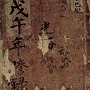
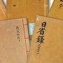
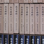

조선왕조실록
- 태조王朝
- 정종定宗
- 태종太宗
- 세종世宗
- 문종文宗
- 전체보기
승정원일기
- 인조仁祖
- 효종孝宗
- 현종顯宗
- 숙종肅宗
- 경종景宗
- 전체보기
조선시대 법령
- 경국대전
- 속대전
- 대전통편
- 수교정례
- 각사수교
- 전체보기
원문사료
-

비변사등록
조선 중기 이후 국가 최고 기구였던
비변사에서 처리한 업무 내용을 날짜
순서로 기록한 문서 -

일성록
왕이 하루 세번 자신을 반성 하나는
의미로 작성한 국왕의 국정 성찰
일기 -

각사등록
조선의 중앙 관청과 지방 관아에서
보고한 공문서 기록